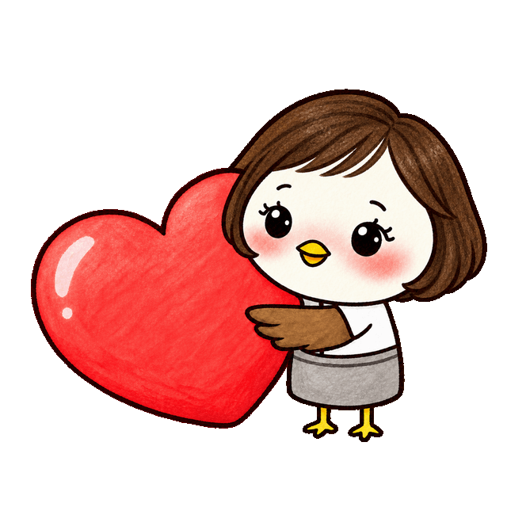

AI봄 · 내 이야기의 시작
어떤 이야기를
펼쳐볼까요?
마음이 가는 주제를 천천히 골라 주세요.
그 안에서 질문을 고르고, 내 이야기로 이어갑니다.

오늘, 나에게 필요한 것
주제 고르기 → 질문 살펴보기 → 내 이야기 적기
내 마음의 5단계를 노래로
지금의 감정에서 한 곡의 이야기까지.
이 주제로 시작하기내 사진, 새로운 분위기로
나를 닮은 프로필의 방향을 찾아보세요.
이 주제로 시작하기오래된 순간을 짧은 영상으로
사진 속 기억에 움직임을 더하는 상상.
이 주제로 시작하기소중한 사람에게 한 곡의 선물
그 사람과 나만 아는 이야기를 담아요.
이 주제로 시작하기내 한 문장이 그림과 음악으로
좋아하는 문장의 분위기를 펼쳐보세요.
이 주제로 시작하기반복하는 일을 조금 가볍게
내 일에서 AI에게 맡길 부분을 찾아요.
이 주제로 시작하기우리 집, 더 편안한 배치로
생활 방식에 맞는 공간을 생각해요.
이 주제로 시작하기내 가게와 브랜드의 다음 모습
손님에게 전하고 싶은 매력을 찾아요.
이 주제로 시작하기마음을 잠시 내려놓는 시간
정답을 서두르지 않고 생각을 정리해요.
이 주제로 시작하기둘러보는 데서, 내 것으로 완성하기까지.
무료 · 로그인 없이 · 사진과 입력 내용은 이 기기에서만 처리합니다.
잠깐 머물러도, 하나는 가져가도록
질문 카드 선물 받기 ↓당신의 생각을 위한 한 장의 여백.
질문을 정리하는 카드를 무료로 저장해 두세요.
이곳은 AI와 나눌 이야기를 준비하는 공간입니다. 실제 이미지·영상·음악 생성과 AI 답변은 본인 계정의 외부 AI 도구에서 이어집니다.